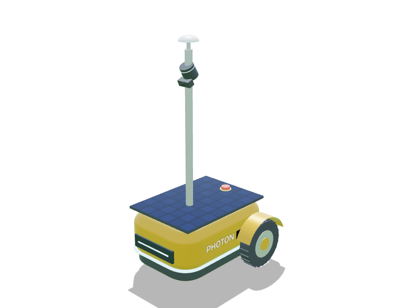

Photon
SentinelA mast to see further, a roof to charge from the sun.
Concept · simulatedTwo-wheel differential, 1 caster
- Cut36 cm
- Top speed0.50 m/s
- Peak rate648 m²/h
- Range500 m²
- Climb12°
- Agility115 cm turn
- Sight43 cm blind
- Cost≈ $2.4k
Special Sees over long grass from 1 m up; its solar roof tops up the battery between missions.
Weakness Tall: low branches and wind. Its mast lidar has a 43 cm blind zone close in.
✔ Smoke test passed · 98.6%Full specs →